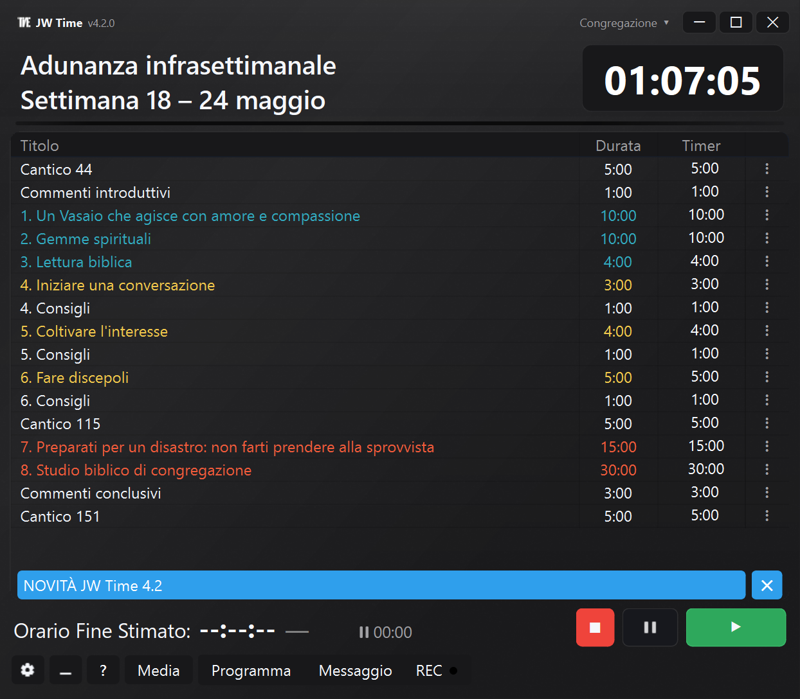
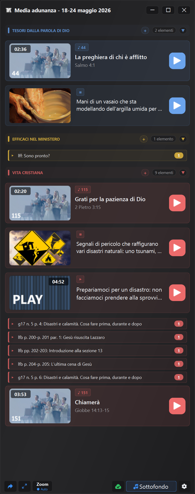

Versione 4.0.0
Disponibile dal 3 giugno 2026Media integrati, Schermo Pubblico, profili congregazione, Monitor Web con controllo remoto, registrazione più flessibile e strumenti più completi per preparare l’adunanza.
La versione 4.0.0 aggiunge strumenti di supporto per preparare e controllare i contenuti disponibili, mostrarli sullo Schermo Pubblico e gestire timer, media e registrazione con meno passaggi manuali.
Le funzioni previste per la 3.0 sono confluite nella 4.0.0, insieme al nuovo sistema Media, allo Schermo Pubblico e ai profili congregazione. Per questo la cronologia passa direttamente dalla 2.1.0 alla 4.0.0.
Qui sotto trovi le novità principali, con esempi concreti di cosa cambia nell’uso reale dell’app.


Anteprima della nuova interfaccia e della finestra Media di JW Time 4.0.
In breve NUOVO
- Puoi visualizzare e organizzare immagini, video, PDF, URL, cantici e contenuti ufficiali già disponibili con il supporto della finestra Media.
- Mostra media e contenuti visuali su uno Schermo Pubblico separato dal Contatempo.
- Personalizza lo Schermo Contatempo con preset, editor, sfondi, colori, logo, orologio e livelli.
- Usa profili congregazione separati per schermi, finestre, server, registrazione, media e layout.
- Apri il Monitor Web tramite QR e, se autorizzato, controlla timer e scaletta dal browser.
- Prepara pacchetti e backup più completi per lavorare offline o spostare la configurazione.
Media e preparazione dell’adunanza NUOVO
La finestra Media offre uno strumento di supporto per preparare e controllare più facilmente i contenuti disponibili.
Nota: la finestra Media è una funzione di supporto tecnico. Permette di preparare e controllare più facilmente i contenuti disponibili, ma l’utilizzo pratico resta sempre legato alle necessità locali, alle indicazioni della congregazione e alle disposizioni.
- Aggiungi file locali, immagini, video, PDF e URL.
- Visualizza cantici, media ufficiali e contenuti collegati alla settimana.
- Organizza contenuti manuali in gruppi e riordina gli elementi secondo il programma.
- Controlla in anticipo cosa è disponibile e cosa manca.
- Apri o mostra un contenuto sullo Schermo Pubblico senza cercarlo in cartelle diverse.
Media ufficiali, playlist e pacchetti NUOVO
JW Time può aiutare a organizzare e riutilizzare contenuti ufficiali già disponibili e contenuti locali in modo più ordinato, anche quando devi lavorare offline.
- Scarica e riusa media ufficiali già presenti in locale.
- Gestisci una cache dedicata per i cantici ufficiali, con controlli di disponibilità.
- Importa playlist e collega materiale già preparato.
- Crea o usa pacchetti media con file locali, URL, immagini e contenuti ufficiali.
- Apri il Controllo Media per vedere file mancanti, contenuti offline, problemi e dimensioni locali.
- Copia i dettagli del controllo quando devi verificare o condividere un problema.
Nota importante: il percorso alternativo introdotto in JW Time 2.1.0 riguarda i programmi settimanali e del fine settimana. Per i media ufficiali non esiste un secondo server di recupero. Se router, firewall, DNS o filtri contenuti bloccano JW Time nell'accesso a jw.org o ai siti religiosi, la finestra Media potrebbe non riuscire a scaricare i media ufficiali. I file già scaricati, i media locali e i contenuti aggiunti manualmente restano utilizzabili.
Schermo Contatempo e Schermo Pubblico NUOVO
Le visualizzazioni sono state separate: il Contatempo serve a chi conduce, lo Schermo Pubblico serve alla sala.
- Parti da preset pronti per lo Schermo Contatempo.
- Modifica disposizione, livelli, colori, sfondi, logo, orologio e testi con l’editor.
- Mostra immagini, PDF, video e contenuti visuali sullo Schermo Pubblico.
- Tieni separato il timer visibile a chi conduce dai contenuti mostrati al pubblico.
- Recupera meglio finestre fuori schermo e configurazioni monitor cambiate.
Congregazioni, profili e backup NUOVO
I profili congregazione evitano di riconfigurare JW Time quando l’app viene usata in contesti diversi.
- Mantieni separati lingua, tema, scala interfaccia, schermi e finestre.
- Salva configurazioni diverse per Server Web, registrazione, media e layout.
- Importa, esporta e duplica profili per preparare configurazioni simili.
- Trasferisci impostazioni su un altro computer con backup più completi.
- Le impostazioni esistenti vengono migrate nel primo profilo.
Server Web e controllo remoto NUOVO
Il Server Web può essere usato solo per visualizzare il programma oppure, se autorizzato, per intervenire da browser.
- Apri il Monitor Web da telefono, tablet o altro computer nella stessa rete.
- Usa il QR per raggiungere più rapidamente l’indirizzo del Server Web.
- Segui timer, programma e orario di fine stimato in tempo reale.
- Con il ruolo Controller puoi avviare, fermare, passare alla parte successiva e modificare valori disponibili nella scaletta.
- Proteggi Editor, Controller e accesso remoto con PIN quando serve.
Registrazione e audio MIGLIORATO
La registrazione è stata adattata meglio al flusso reale dell’adunanza, dove possono servire pause, riprese e controlli rapidi.
- Gestisci pausa e ripresa della registrazione in modo più diretto.
- Controlla meglio i dispositivi audio configurati.
- Vedi informazioni utili dal pulsante REC e dai livelli audio.
- Integra registrazione, media e timer senza aprire pannelli non necessari.
Impostazioni, avvio guidato e interfaccia MIGLIORATO
Le impostazioni sono state riorganizzate per area e l’avvio guidato aiuta a configurare le parti essenziali.
- Configura lingua, schermi, server, backup e opzioni principali durante il primo avvio.
- Trova più facilmente tema, scala interfaccia e lingua del programma.
- Usa pannelli impostazioni separati per Media, Zoom, Server Web, Registrazioni e Backup.
- Consulta la finestra Novità dentro l’app anche dopo il primo avvio.
Stabilità e correzioni CORRETTO
Molte correzioni riguardano situazioni pratiche che possono capitare durante l’uso settimanale.
- Finestre ricordate meglio e recupero più affidabile dopo cambi monitor.
- Chiusura dell’app più ordinata, anche con server, media e schermate aperte.
- Gestione più stabile di Schermo Pubblico, Server Web, media e registrazione.
- Migliorati download, cache media, percorsi locali e file temporanei.
- Stati dell’app più coerenti durante cambio settimana, lingua, congregazione o programma.